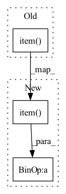

Pattern ID :2343

Before Change
loss = self.decoder(x, unet_number = unet_number, **kwargs)
scaled_loss = self.scale(loss / divisor, unet_number = unet_number)
scaled_loss.backward()
return loss.item()
After Change
with autocast(enabled = self.amp):
loss = self.decoder(*chunked_args, unet_number = unet_number, **chunked_kwargs)
total_loss += loss.item() * chunk_size
total_samples += chunk_size
self.scale(loss * (chunk_size / batch_size), unet_number = unet_number).backward()
In pattern: SUPERPATTERN
Frequency: 4
Non-data size: 3
Instances
Fragment ID: 14429128
Project Name: lucidrains/dalle2-pytorch
Commit Name: b0cd5f24b67fe7dda6bc5771ec9073a8556e7271
Time: 2022-05-14
Author: lucidrains@gmail.com
File Name: dalle2_pytorch/train.py
M Class Name: DecoderTrainer
N Class Name: DecoderTrainer
M Method Name: forward(2)
N Method Name: forward(2)
M Parent Class: nn.Module
N Parent Class: nn.Module
M File Name: dalle2_pytorch/train.py
N File Name: dalle2_pytorch/train.py
M Start Line: 333
M End Line: 337
N Start Line: 388
N End Line: 401
'>
Before Change
loss = self.diffusion_prior(*args, **kwargs)
scaled_loss = self.scaler.scale(loss / divisor)
scaled_loss.backward()
return loss.item()
// decoder trainer
class DecoderTrainer(nn.Module):
After Change
with autocast(enabled = self.amp):
loss = self.diffusion_prior(*chunked_args, **chunked_kwargs)
total_loss += loss.item() * chunk_size
total_samples += chunk_size
self.scaler.scale(loss * (chunk_size / batch_size)).backward()
'>
Fragment ID: 14429129
Project Name: lucidrains/dalle2-pytorch
Commit Name: b0cd5f24b67fe7dda6bc5771ec9073a8556e7271
Time: 2022-05-14
Author: lucidrains@gmail.com
File Name: dalle2_pytorch/train.py
M Class Name: DiffusionPriorTrainer
N Class Name: DiffusionPriorTrainer
M Method Name: forward(2)
N Method Name: forward(1)
M Parent Class: nn.Module
N Parent Class: nn.Module
M File Name: dalle2_pytorch/train.py
N File Name: dalle2_pytorch/train.py
M Start Line: 215
M End Line: 219
N Start Line: 256
N End Line: 274
'>
Before Change
device=wav.device,
dtype=torch.long,
)
factor = self.config.num_negatives % dynamic_num_negatives.item()
negative_sample_indices = torch.cat(
[negative_sample_indices] * factor, dim=-1
)
print(negative_sample_indices.shape)
After Change
dtype=torch.long,
)
factor = (
int(self.config.num_negatives % dynamic_num_negatives.item()) - 1
)
negative_sample_indices = torch.cat(
[negative_sample_indices] * factor, dim=-1
'>
Fragment ID: 14429130
Project Name: speechbrain/speechbrain
Commit Name: 02f19dc4d78f453b912354eb2a17746c8cc4dc88
Time: 2021-12-10
Author: parcollet.titouan@gmail.com
File Name: speechbrain/lobes/models/huggingface_wav2vec.py
M Class Name: HuggingFaceWav2Vec2Pretrain
N Class Name: HuggingFaceWav2Vec2Pretrain
M Method Name: forward(2)
N Method Name: forward(2)
M Parent Class: nn.Module
N Parent Class: nn.Module
M File Name: speechbrain/lobes/models/huggingface_wav2vec.py
N File Name: speechbrain/lobes/models/huggingface_wav2vec.py
M Start Line: 391
M End Line: 391
N Start Line: 392
N End Line: 393
'>
Before Change
negative_sample_indices = torch.cat(
[negative_sample_indices]
* (self.config.num_negatives % dynamic_num_negatives.item()),
dim=-1,
)
print(negative_sample_indices.shape)
After Change
negative_sample_indices = torch.cat(
[negative_sample_indices]
* ((self.config.num_negatives % dynamic_num_negatives.item()) - 1),
dim=-1,
)
print(negative_sample_indices.shape)
'>
Fragment ID: 14429127
Project Name: speechbrain/speechbrain
Commit Name: 3b2428cfdee057512e8433d6de918039757bae8f
Time: 2021-12-10
Author: parcollet.titouan@gmail.com
File Name: speechbrain/lobes/models/huggingface_wav2vec.py
M Class Name: HuggingFaceWav2Vec2Pretrain
N Class Name: HuggingFaceWav2Vec2Pretrain
M Method Name: forward(2)
N Method Name: forward(2)
M Parent Class: nn.Module
N Parent Class: nn.Module
M File Name: speechbrain/lobes/models/huggingface_wav2vec.py
N File Name: speechbrain/lobes/models/huggingface_wav2vec.py
M Start Line: 394
M End Line: 394
N Start Line: 394
N End Line: 394